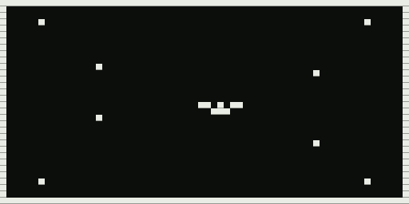

Astro-Fighter
M. Spieth · DREAMER no. 10 (1981-06) p. 18 1K RAMjoystick


Fly with the joystick to bring an enemy fighter into the centre of the screen and fire four photon torpedoes at it with F, while space junk drifts past. The game lasts two minutes and the number of hits is shown at the end. The screen stays blank until F is pressed.
Keys
F starts and fires; fly with Bauer's joystick.
Files
| File | Version | Load | Run |
|---|---|---|---|
| Astro-Fighter.d68 | main | 0080-03FF | C000 |
Listing as transcribed (with notes): astro_fighter.txt
Source
DREAMER no. 10 on archive.org, p. 18 (PDF page 20). Author: M. Spieth.
Corrections applied
- 0254 1265 -> 1266 (1265 jumps into the middle of an instruction; the article's hint says 0254 holds 1266).
Open doubts
- It reads the joystick with its own routine at 036F, not Bauer's interrupt routine.